IBAN en kenmerk, zonder typen
Scan een papieren of pdf-rekening: naam, IBAN, bedrag en kenmerk staan klaar voor je eigen bank-app. Gelezen op je telefoon, met herinnering op tijd.
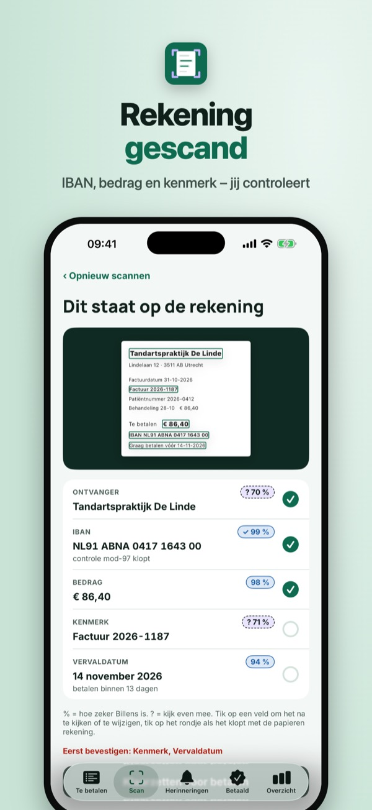
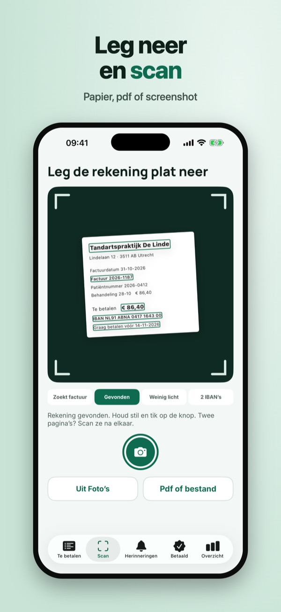
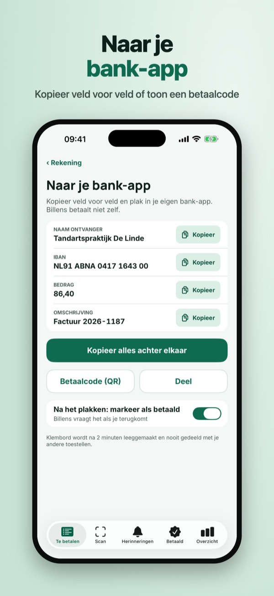
Billens haalt het overtikken uit je rekeningen. Scan een papieren rekening, of deel een pdf of screenshot, en Billens leest naam, IBAN, bedrag, kenmerk en vervaldatum op je telefoon.
Drie rekeningen per maand scannen, controleren, kopiëren en herinneren werkt zonder aankoop. Billens Plus is een eenmalige aankoop: onbeperkt rekeningen, het volledige archief met zoeken en het maandoverzicht per categorie. Geen abonnement.
Billens is geen bank en voert geen betalingen uit: je betaalt altijd zelf in je eigen bank-app. Het lezen van rekeningen kan fouten maken – controleer de gegevens voordat je betaalt. Billens vraagt nooit om bankgegevens of inloggegevens.
Terms of Use (EULA): https://www.apple.com/legal/internet-services/itunes/dev/stdeula/
Privacy: https://baytechbv.github.io/privacy/billens-eu/
IBAN et communication lus
Scannez une facture papier ou PDF : nom, IBAN, montant et communication sont prêts pour votre propre app bancaire. Lu sur votre téléphone, avec rappel.
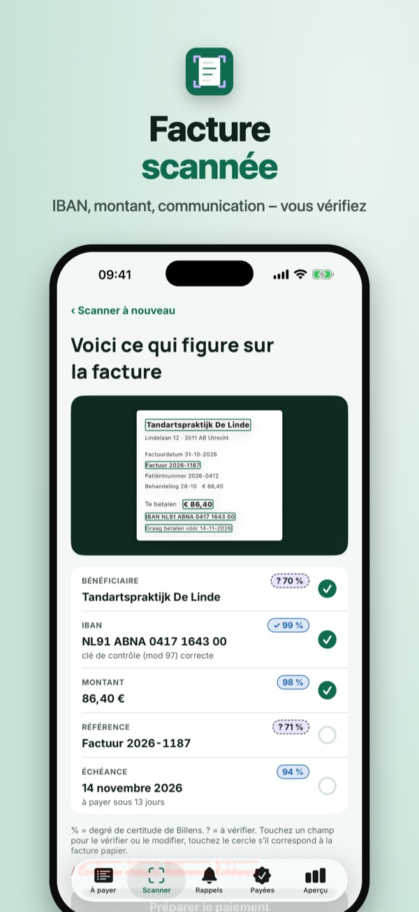
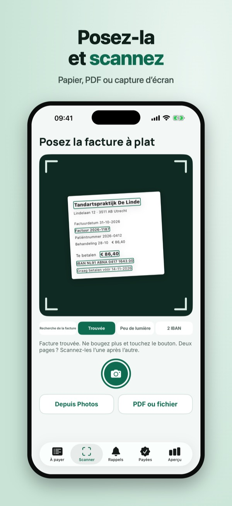
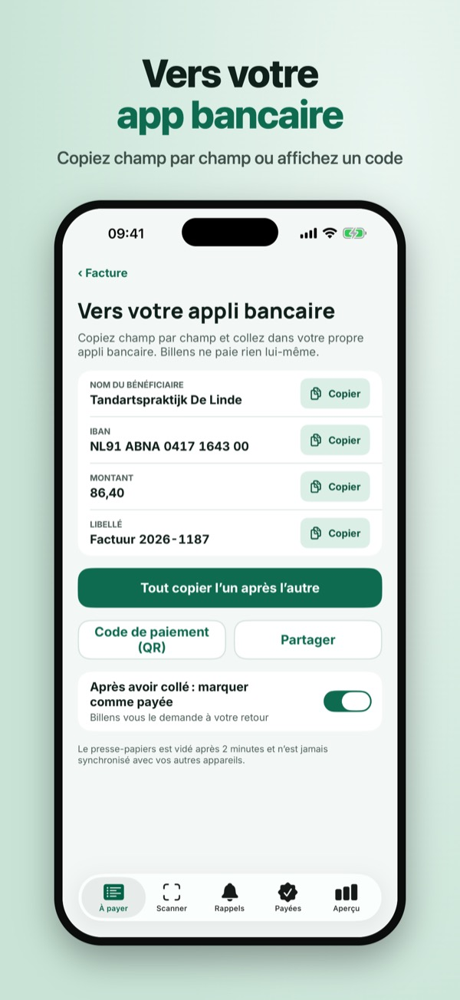
Billens vous évite de recopier vos factures. Scannez une facture papier, ou partagez un PDF ou une capture, et Billens lit le nom, l’IBAN, le montant, la communication et l’échéance sur votre téléphone.
Trois factures par mois avec lecture, vérification, copie et rappel s’utilisent sans achat. Billens Plus est un achat unique : factures illimitées, archives complètes avec recherche et bilan mensuel par catégorie. Sans abonnement.
Billens n’est pas une banque et n’effectue aucun paiement : vous payez toujours vous-même dans votre app bancaire. La lecture peut se tromper – vérifiez les données avant de payer. Billens ne demande jamais vos identifiants bancaires.
Terms of Use (EULA): https://www.apple.com/legal/internet-services/itunes/dev/stdeula/
Privacy: https://baytechbv.github.io/privacy/billens-eu/
Konto i tytuł przelewu od razu
Zeskanuj papierowy lub PDF rachunek: odbiorca, numer konta, kwota i tytuł są gotowe do Twojej aplikacji banku. Odczyt w telefonie, z przypomnieniem.
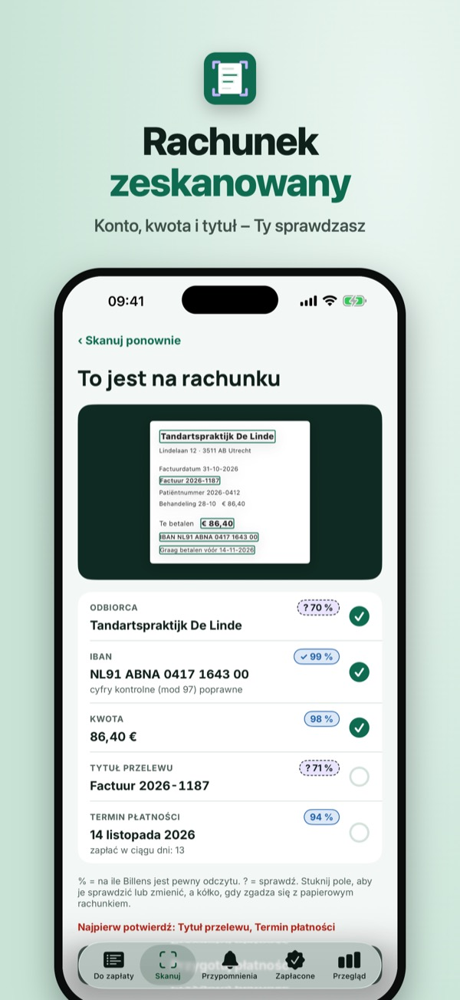
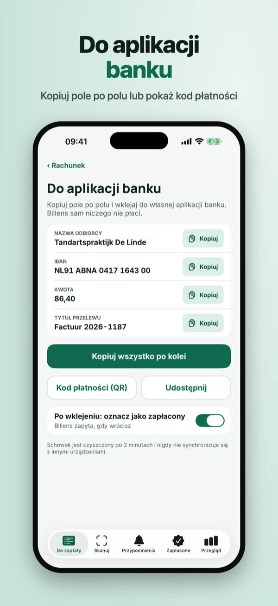
Billens oszczędza przepisywania rachunków. Zeskanuj rachunek z papieru albo udostępnij PDF lub zrzut ekranu, a Billens odczyta w telefonie odbiorcę, numer konta, kwotę, tytuł przelewu i termin.
Trzy rachunki miesięcznie z odczytem, sprawdzeniem, kopiowaniem i przypomnieniem działają bez zakupu. Billens Plus to jednorazowy zakup: bez limitu rachunków, pełne archiwum z wyszukiwaniem i miesięczne podsumowanie według kategorii. Bez subskrypcji.
Billens nie jest bankiem i nie wykonuje płatności: zawsze płacisz sam w swojej aplikacji banku. Odczyt może się pomylić – sprawdź dane przed zapłatą. Billens nigdy nie prosi o dane logowania do banku.
Terms of Use (EULA): https://www.apple.com/legal/internet-services/itunes/dev/stdeula/
Privacy: https://baytechbv.github.io/privacy/billens-eu/
IBAN e referência sem escrever
Digitalize uma fatura em papel ou PDF: nome, IBAN, valor e referência ficam prontos para a sua app do banco. Lido no telemóvel, com lembrete do prazo.
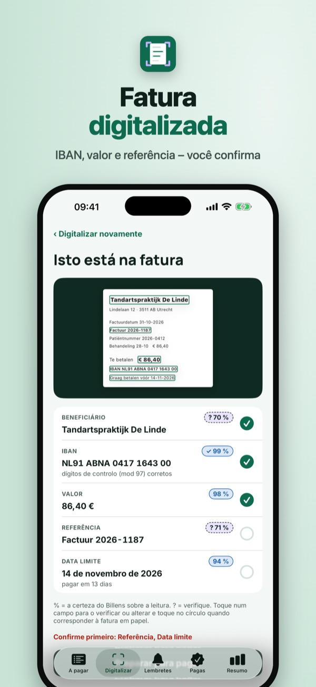
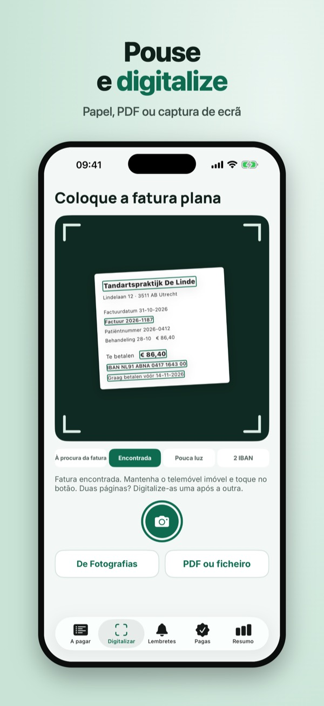
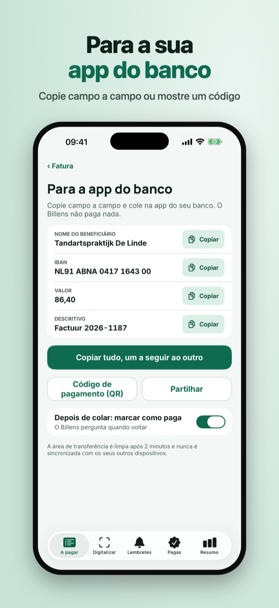
O Billens acaba com o copiar de faturas. Digitalize uma fatura em papel, ou partilhe um PDF ou captura de ecrã, e o Billens lê no telemóvel o nome, o IBAN, o valor, a referência e o prazo.
Três faturas por mês com leitura, verificação, cópia e lembrete funcionam sem compra. O Billens Plus é uma compra única: faturas sem limite, arquivo completo com pesquisa e resumo mensal por categoria. Sem subscrição.
O Billens não é um banco e não faz pagamentos: paga sempre você, na sua app do banco. A leitura pode enganar-se – confirme os dados antes de pagar. O Billens nunca pede dados de acesso ao banco.
Terms of Use (EULA): https://www.apple.com/legal/internet-services/itunes/dev/stdeula/
Privacy: https://baytechbv.github.io/privacy/billens-eu/
IBAN und Zweck ohne Abtippen
Scanne eine Papier- oder PDF-Rechnung: Name, IBAN, Betrag und Zahlungsreferenz stehen für deine eigene Banking-App bereit. Gelesen auf dem Handy, mit Erinnerung.
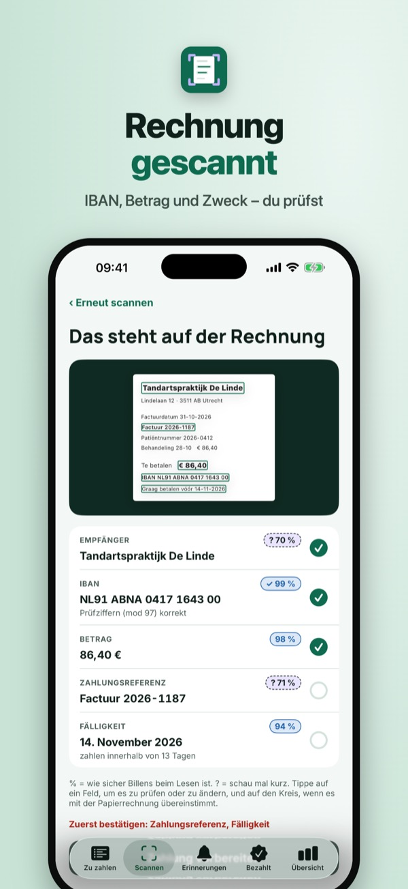
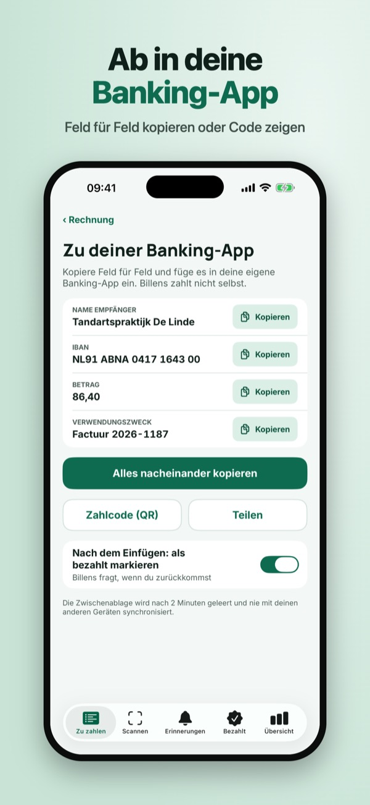
Billens erspart dir das Abtippen von Rechnungen. Scanne eine Papierrechnung oder teile ein PDF oder einen Screenshot, und Billens liest Name, IBAN, Betrag, Zahlungsreferenz und Fälligkeit auf deinem Handy.
Drei Rechnungen pro Monat mit Lesen, Prüfen, Kopieren und Erinnern sind ohne Kauf nutzbar. Billens Plus ist ein Einmalkauf: unbegrenzt Rechnungen, das ganze Archiv mit Suche und die Monatsübersicht nach Kategorien. Kein Abo.
Billens ist keine Bank und führt keine Zahlungen aus: Du zahlst immer selbst in deiner Banking-App. Das Lesen kann sich irren – prüfe die Daten vor dem Bezahlen. Billens fragt nie nach Bank-Zugangsdaten.
Terms of Use (EULA): https://www.apple.com/legal/internet-services/itunes/dev/stdeula/
Privacy: https://baytechbv.github.io/privacy/billens-eu/
IBAN y concepto sin teclear
Escanea una factura en papel o PDF: nombre, IBAN, importe y concepto quedan listos para tu propia app del banco. Leído en el móvil, con recordatorio.
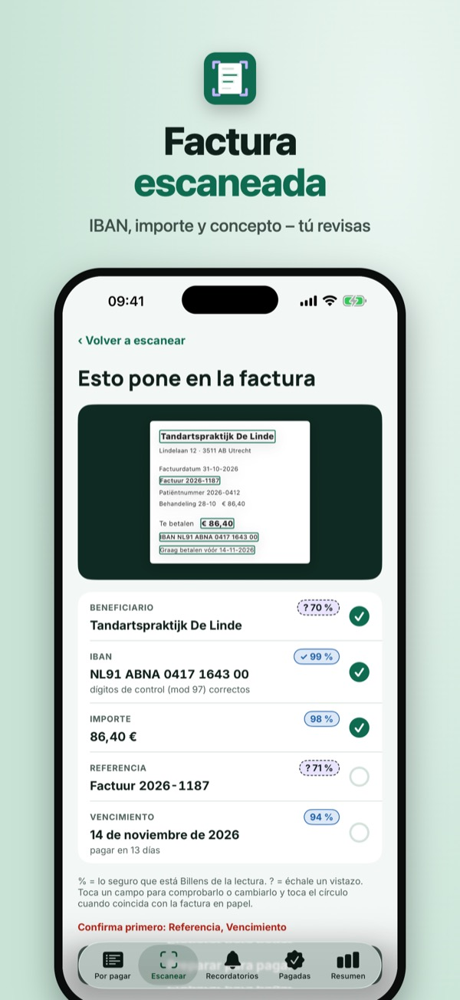
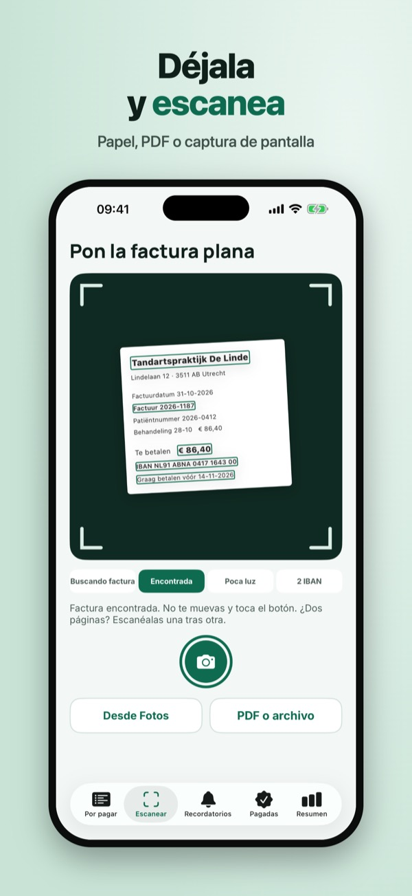
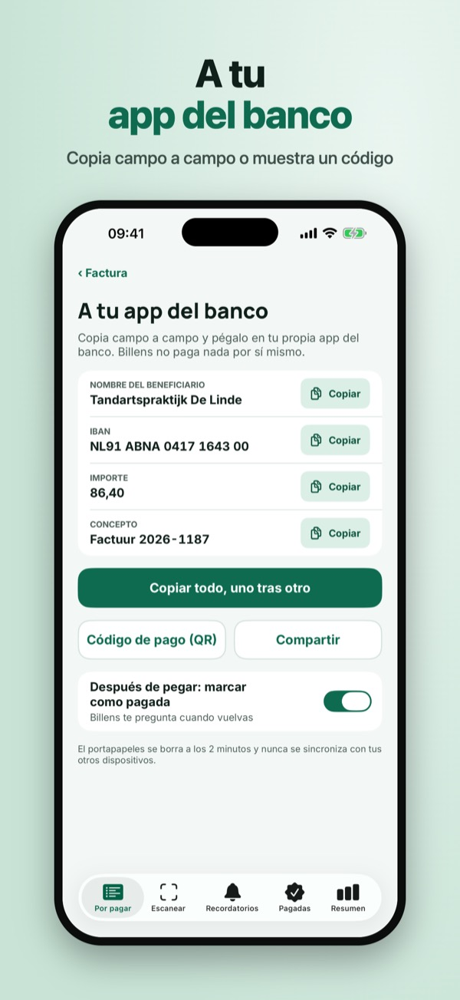
Billens te ahorra copiar facturas a mano. Escanea una factura en papel, o comparte un PDF o una captura, y Billens lee en tu móvil el nombre, el IBAN, el importe, el concepto y el vencimiento.
Tres facturas al mes con lectura, comprobación, copia y recordatorio se usan sin compra. Billens Plus es una compra única: facturas sin límite, archivo completo con búsqueda y resumen mensual por categoría. Sin suscripción.
Billens no es un banco y no realiza pagos: siempre pagas tú en tu app del banco. La lectura puede fallar: comprueba los datos antes de pagar. Billens nunca pide datos de acceso al banco.
Terms of Use (EULA): https://www.apple.com/legal/internet-services/itunes/dev/stdeula/
Privacy: https://baytechbv.github.io/privacy/billens-eu/
Číslo účtu a symbol bez psaní
Naskenujte papírovou nebo PDF fakturu: jméno, IBAN, částka a symbol jsou připravené pro vaši bankovní aplikaci. Čteno v telefonu, s připomínkou.
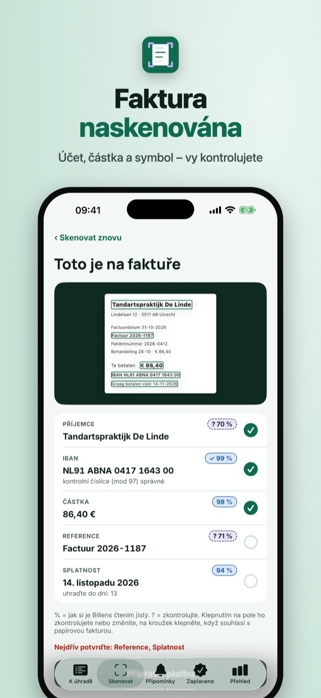
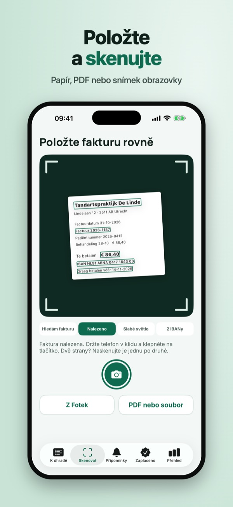
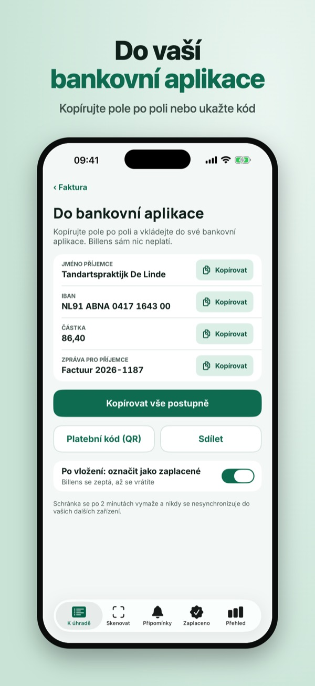
Billens vás ušetří přepisování faktur. Naskenujte papírovou fakturu nebo sdílejte PDF či snímek obrazovky a Billens v telefonu přečte jméno, IBAN, částku, variabilní symbol a splatnost.
Tři faktury měsíčně se čtením, kontrolou, kopírováním a připomínkou fungují bez nákupu. Billens Plus je jednorázový nákup: neomezeně faktur, celý archiv s vyhledáváním a měsíční přehled podle kategorií. Bez předplatného.
Billens není banka a neprovádí platby: platíte vždy sami ve své bankovní aplikaci. Čtení se může splést – před platbou údaje zkontrolujte. Billens nikdy nežádá přihlašovací údaje do banky.
Terms of Use (EULA): https://www.apple.com/legal/internet-services/itunes/dev/stdeula/
Privacy: https://baytechbv.github.io/privacy/billens-eu/